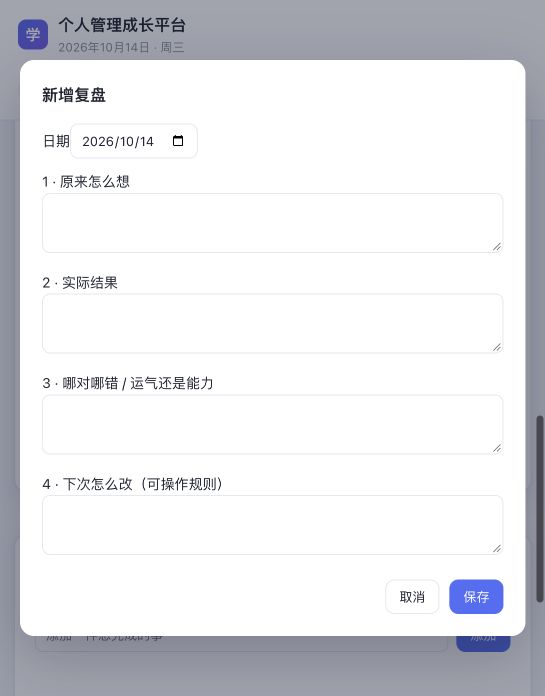

01 · 打开首页 — 需要优先优化
首屏先看到保存、导出、重置及一整块说明。今日待学习虽已出现，但具体课题和开始按钮仍在下方。12 个平级导航在窄窗口被横向截断。
建议：顶部压缩为日期、今天摘要和新增待办；管理操作进入设置。首页直接展示今日课程卡和待办摘要。
02 · 进入课程 — 阅读入口受干扰
正文之前出现主题确认、备份、生成以及文件路径、密钥和写入协调提示。禁用的生成按钮仍使用强主色，容易争夺注意力。
建议：点击课程后先进入正文；仅把当前阅读或保存确实需要处理的问题放在对应操作附近。生成与维护移到课程管理，保留必要的写入保护。
03 · 安排待办 — 基本清楚但入口靠后
添加待办的入口简单，完成数清楚；但需经过课程历史列表才能看到，空状态也占用较多高度。今日和明日顺序堆叠，难以快速比较安排。
建议：桌面将今日学习和待办并排；窄屏优先显示当日摘要与待办入口。历史课程默认折叠，明日安排以明确入口展开。
04 · 填写复盘 — 可用，提示和衔接不足

四问结构完整，但四个空框没有关联今天完成的事项；“哪对哪错／运气还是能力”对普通日常记录偏抽象。页面将未来日期称为“明日复盘”，需要额外解释才能理解。
建议：先显示当天完成概况，再填写收获、阻碍和下一步。明日内容显示为“明日预期”，日期到来后再填写实际结果；既有记录保留。